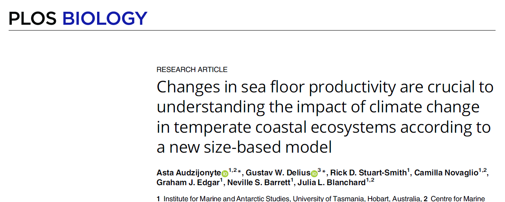

Our Research
Jump to:
Properties of intra-specific size distributions
PREPRINT: Consistency in body size frequency among hundreds of marine fishes with diverse life histories
Freddie J. Heather, Shane A. Richards, Nils C. Krueck, Rick D. Stuart-Smith, Simon J. Brandl, Jordan M. Casey, Graham J. Edgar, Neville Barrett, Valeriano Parravicini, Asta Audzijonyte
Animal body size distributions are shaped by complex interactions among growth, mortality and recruitment. Theoretical expectations of fish body size distributions, derived from growth (k) and mortality (M) rates, are extensively used in fish stock assessments worldwide, yet rely on two life-history parameters (M and k) that are difficult to estimate. Using survey data for 822 species (3,228 populations) of shallow water marine fishes, we show that observed body length distributions can be reconstructed in the absence of these two parameters, and instead using only a single body length metric of a population (e.g., the mean or asymptotic body length). When scaled to the mean of the population, the frequency of body lengths from temporally pooled samples showed a consistent unimodal shape, which could be approximated by the truncated normal or lognormal distribution with a coefficient of variation value of around 0.3. This observation was evident for species with diverse life histories spanning two orders of magnitude in maximum body length. The consistency in population and species-level body length distributions suggests evolutionary convergence on a narrow range of viable outcomes even though multiple intrinsic and extrinsic factors are expected to influence body sizes. The reconstruction of fish body length distributions without knowledge of growth and mortality rates has important implications for the assessment and management of data-poor coastal fisheries worldwide.
Future work
We are looking for more datasets and systems to explore properties of size distributions and variation through space and time. We also need to understand whether life-history and environmental conditions can explain the residual variation from the general patterns. If you would like to collaborate with us - get in touch.
Temperature impacts on fish sizes
PREPRINT: Temperature affects fish body sizes. Which sizes?
Asta Audzijonyte, Ken H. Andersen, David Atkinson, Jennifer Bigman, Julia L. Blanchard, Amy R. Coghlan, Freddie Heather, Max Lindmark, John R. Morrongiello, Daniel Pauly
An extensive literature exists on how environmental conditions, especially temperature, impact animal body sizes. However, there remains considerable discrepancies, and misunderstanding, in the key definitions and concepts of body size used to describe observed impacts across studies. Size can be measured using continuous growth metrics, including von Bertalanffy growth coefficients, or static ‘size’ metrics, such as population-averaged length or mass, average size-at-(arbitrary)-age, size-at-maturity, adult size, asymptotic size, or the maximum observed size. Critically, these concepts of size are not equivalent, and temperature is likely to affect each in different ways. The use of these disparate size and growth metrics as response variables estimated across different biological scales (individual, population, or community) and empirical contexts (laboratory, field) has led to unnecessary confusion and apparent contradictions among practitioners. Here, we review nine common confusions associated with the measurement of ‘size’ in fish and other water-breathing ectotherms. We then highlight outstanding knowledge gaps on how temperature and global warming might affect different size metrics. Clarifying concepts, definitions, and applications of body size measures is important as it can help reconcile divergent findings, target future research, and improve our predictions about the warming impacts on wild populations.
Mean reef fish body size decreases towards warmer waters (2024)
Amy Rose Coghlan, Julia L Blanchard, Simon Wotherspoon, Rick D Stuart‐Smith, Graham J Edgar, Neville Barrett, Asta Audzijonyte
Aquatic ectotherms often attain smaller body sizes at higher temperatures. By analysing ~15,000 coastal-reef fish surveys across a 15°C spatial sea surface temperature (SST) gradient, we found that the mean length of fish in communities decreased by ~5% for each 1°C temperature increase across space, or 50% decrease in mean length from 14 to 29°C mean annual SST. Community mean body size change was driven by differential temperature responses within trophic groups and temperature-driven change in their relative abundance. Herbivores, invertivores and planktivores became smaller on average in warmer temperatures, but no trend was found in piscivores. Nearly 25% of the temperature-related community mean size trend was attributable to trophic composition at the warmest sites, but at colder temperatures, this was <1% due to trophic groups being similarly sized. Our findings suggest that small changes in temperature are associated with large changes in fish community composition and body sizes, with important ecological implications.
Fish body sizes change with temperature but not all species shrink with warming (2020)
Asta Audzijonyte, Shane A. Richards, Rick D. Stuart-Smith, Gretta Pecl, Graham J. Edgar, Neville S. Barrett, Nicholas Payne, Julia L. Blanchard
Ectotherms generally shrink under experimental warming, but whether this pattern extends to wild populations is uncertain. We analysed ten million visual survey records, spanning the Australian continent and multiple decades and comprising the most common coastal reef fishes (335 species). We found that temperature indeed drives spatial and temporal changes in fish body size, but not consistently in the negative fashion expected. Around 55% of species were smaller in warmer waters (especially among small-bodied species), while 45% were bigger. The direction of a species’ response to temperature through space was generally consistent with its response to temperature increase through time at any given location, suggesting that spatial trends could help forecast fish responses to long-term warming. However, temporal changes were about ten times faster than spatial trends (~4% versus ~40% body size change per 1 °C change through space and time, respectively). The rapid and variable responses of fish size to warming may herald unexpected impacts on ecosystem restructuring, with potentially greater consequences than if all species were shrinking.
Mechanistic temperature-size rule explanation should reconcile physiological and mortality responses to temperature (2022)
Asta Audzijonyte, Egle Jakubavičiūtė, Max Lindmark, Shane A. Richards
The temperature-size rule is one of the universal rules in ecology and states that ectotherms in warmer waters will grow faster as juveniles, mature at smaller sizes and younger ages, and reach smaller maximum body sizes. Many models have unsuccessfully attempted to reproduce temperature-size rule-consistent life histories by using two-term (anabolism and catabolism) Pütter-type growth models, such as the von Bertalanffy. Here, we present a physiologically structured individual growth model, which incorporates an energy budget and optimizes energy allocation to growth, reproduction, and reserves. Growth, maturation, and reproductive output emerge as a result of life-history optimization to specific physiological rates and mortality conditions. To assess which processes can lead to temperature-size rule-type life histories, we simulate 42 scenarios that differ in temperature and body size dependencies of intake, metabolism, and mortality rates. Results show that the temperature-size rule can emerge in two ways. The first way requires both intake and metabolism to increase with temperature, but the temperature-body size interaction of the two rates must lead to relatively faster intake increase in small individuals and relatively larger metabolism increase in large ones. The second way requires only higher temperature-driven natural mortality and faster intake rates in early life (no change in metabolic rates is needed) …Our model … shows that the temperature-size rule is likely to reflect both physiological changes and life-history optimization and that use of von Bertalanffy-type models, which do not include reproduction processes, can hinder our ability to understand and predict ectotherm responses to climate change.
Smaller adult fish size in warmer water is not explained by elevated metabolism (2022)
Henry F. Wootton, John R. Morrongiello, Thomas Schmitt, Asta Audzijonyte
Fish and other ectotherms living in warmer waters often grow faster as juveniles, mature earlier, but become smaller adults. Known as the temperature-size rule (TSR), this pattern is commonly attributed to higher metabolism in warmer waters, leaving fewer resources for growth. An alternative explanation focuses on growth and reproduction trade-offs across temperatures. We tested these hypotheses by measuring growth, maturation, metabolism and reproductive allocation from zebrafish populations kept at 26 and 30°C across six generations. Zebrafish growth and maturation followed TSR expectations but were not explained by baseline metabolic rate, which converged between temperature treatments after a few generations. Rather, we found that females at 30°C allocated more to reproduction, especially when maturing at the smallest sizes. We show that elevated temperatures do not necessarily increase baseline metabolism if sufficient acclimation is allowed and call for an urgent revision of modelling assumptions used to predict population and ecosystem responses to warming.
Future work
There are so many questions about temperature impacts on fish body sizes. We are currently exploring temperature effects on full size distributions (skewness, means and maximums), growth and mortality conditions under which mean and asymptotic fish sizes may change in different directions, and scaling of maximum intra-specific body size across temperature gradients. We are studying growth (biochronologies) of rocky reef species to understand whether observed changes in size distributions are largely driven by growth or mortality. And we are always happy to collaborate.
Applying size based models to assess human impacts
Changes in sea floor productivity are crucial to understanding the impact of climate change in temperate coastal ecosystems according to a new size-based model (2023)
Asta Audzijonyte, Gustav W Delius, Rick D Stuart-Smith, Camilla Novaglio, Graham J Edgar, Neville S Barrett, Julia L Blanchard
The multifaceted effects of climate change on physical and biogeochemical processes are rapidly altering marine ecosystems but often are considered in isolation… This is particularly true for shallow coastal ecosystems, which are fuelled by a combination of distinct pelagic and benthic energy pathways that may respond to climate change in fundamentally distinct ways…We developed a novel, multispecies size spectrum model for shallow coastal reefs, specifically designed to simulate potential interactive outcomes of changing benthic and pelagic energy inputs and temperatures and calculate the relative importance of these variables for the fish community. Our model, calibrated using field data from an extensive temperate reef monitoring program, predicts that changes in resource levels will have much stronger impacts on fish biomass and yields than changes driven by physiological responses to temperature. Under increased plankton abundance, species in all fish trophic groups were predicted to increase in biomass, average size, and yields. By contrast, changes in benthic resources produced variable responses across fish trophic groups. Increased benthic resources led to increasing benthivorous and piscivorous fish biomasses, yields, and mean body sizes, but biomass decreases among herbivore and planktivore species. When resource changes were combined with warming seas, physiological responses generally decreased species’ biomass and yields. Our results suggest that understanding changes in benthic production and its implications for coastal fisheries should be a priority research area. Our modified size spectrum model provides a framework for further study of benthic and pelagic energy pathways that can be easily adapted to other ecosystems.

Future work
Our main current focus is in applying size based population and fisheries assesssment models to determine status of many coastal fish populations using non traditional data sources, such as visual observations, cameras and citizen science data. We are especially interested in determining effects of recreational fishing, impacts of marine protected areas and extending assessments to small scale fisheries.
Using historical records to understand shifting baselines
Quantifying the historical development of recreational fisheries in Southeast Queensland, Australia (2022)
Carolina Chong-Montenegro, Ruth H Thurstan, John M Pandolfi
Recreational fisheries are of global socio-ecological importance and contribute significantly to local economies and fisheries harvests. In some regions of Australia, organized recreational fishing activities have existed for over 150 yr…This study used historical newspaper articles of reported landings by fishing clubs to reconstruct catch rate trends and evaluate changes in catch composition of marine recreational fishing activities in Moreton Bay, Queensland, Australia, from 1920-1984. Using generalized additive mixed models, 2 catch rate metrics (no. of fish fisher-1 trip-1 and kg fish fisher-1 trip-1) were constructed as functions of time and distance travelled. … Spatial analysis revealed shifts in areas fished, from inshore reefs during the 1920s and 1930s (pre-WWII) towards isolated offshore island systems in later decades (>1950s; post-WWII). Reported catches pre-WWII were strongly associated with reef species, while reported catches post-WWII were predominantly characterized by demersal coastal fish. Spatially resolved time-series fisheries data can be reconstructed from archival sources, providing valuable information about the development of recreational fishing activities and explaining the historical social-ecological dynamics that led to current ecosystem states.
Future work
Historical data helps us understand the impact of human activities and shifting baseline syndrome. We are working on using historical records, such as oral histories, photographs, newspaper articles, logbooks for estimating fish sizes and abundances to inform current fisheries assessments and management.